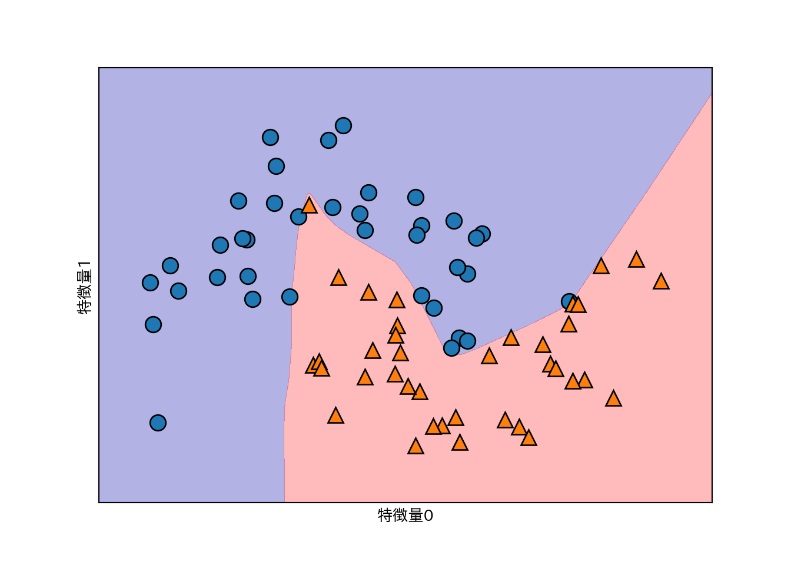

3.3 ニューラルネットワーク(ディープラーニング)
- 最近流行りの例のアレ。
- 実際のアルゴリズムの多くは特定の用途向けに注意深く作られたものになっている。
- ディープラーニングの中でも割と簡単な多層パーセプトロン(multilayer perceptron: MLP)を例にする。
3.3.1 ニューラルネットワークモデル
- MLPは線形モデルを一般化して複数ステージで計算するもの。
- 線形回帰は重み付きの和を計算している。
- MLPは重み付き和の計算を繰り返す。中間ステップを隠れユニットと呼ぶ。
重み付き和を単に連続して計算するのは、1つの重み付き和を計算するのと等価なので、もう少し工夫しないと線形モデルと変わらない。
- ざっくりとした説明:
- 入力から隠れ層への重みを\({\bf W}_1\)、隠れ層から出力への重みを\({\bf W}_2\)と行列で表す。
- このとき、隠れ層の値\({\bf h}\)は、入力\({\bf x}\)と重みの積として\({\bf h}={\bf W_1x}\)として表せる。
- 同様に、\(y={\bf W_2h}\)。
- 全体は\(y={\bf W_2 W_1 x}\)のように表現できるが、ここで\({\bf W_3}={\bf W_2W_1}\)を考えることができるので、結局2つの重み付き和を計算するのは1つの重み付き和を計算するのと変わらない。
- 同様に、層を何層に増やしても途中の計算が線形である限り、必ず1層の等価な重み付き和が存在する。
- もう少しの工夫 = 重み付き和の計算結果に非線形関数を適用する。
- relu(rectified linear unit: 正規化線形関数)
- ゼロ以下の値を切り捨てる。
- tanh(hyperbolic tangent: 双極正接関数)
- 小さい値は-1、大きい値は+1に飽和。
- relu(rectified linear unit: 正規化線形関数)
- この工夫によって線形モデルよりはるかに複雑なモデルを学習可能となる。
- 重み付き和を出力する際に変換を行う関数は活性化関数(activation function)とも呼ばれる。
relu関数とtanh関数を示す。relu関数は0との間でmaxを取れば良い。tanh関数はNumPyに実装されている。
line = np.linspace(-3, 3, 100)
plt.plot(line, np.tanh(line), label="tanh")
plt.plot(line, np.maximum(line, 0), label="relu")
plt.legend(loc="best")
plt.xlabel("x")
plt.ylabel("relu(x), tanh(x)")- 隠れ層を追加したり、隠れ層のノード数を増やしたりしてより複雑なニューラルネットを作成することができる。ノード数は時には10,000にもなる。
- このような計算層を多数持つニューラルネットからディープラーニングという言葉が生まれた。
3.3.2 ニューラルネットワークのチューニング
two_moonsデータセットを用いる。
from sklearn.neural_network import MLPClassifier
from sklearn.datasets import make_moons
X, y = make_moons(n_samples=100, noise=.25, random_state=3)
X_train, X_test, y_train, y_test = train_test_split(
X, y, stratify=y, random_state=42
)
mlp = MLPClassifier(solver='lbfgs', random_state=0).fit(X_train, y_train)
mglearn.plots.plot_2d_separator(mlp, X_train, fill=True, alpha=.3)
mglearn.discrete_scatter(X_train[:, 0], X_train[:, 1], y_train)
plt.xlabel("特徴量0")
plt.ylabel("特徴量1")
- デフォルトではMLPは100のノードからなる単一の隠れ層を持つが、これは小さなデータセットに対しては大きすぎるので10に減らしてみる。
mlp = MLPClassifier(solver='lbfgs', random_state=0, hidden_layer_sizes=[10])
mlp.fit(X_train, y_train)
mglearn.plots.plot_2d_separator(mlp, X_train, fill=True, alpha=.3)
mglearn.discrete_scatter(X_train[:, 0], X_train[:, 1], y_train)
plt.xlabel("特徴量0")
plt.ylabel("特徴量1")- 上記の例で境界がギザギザなのは、デフォルトで活性化関数がrelu関数のため。
- 層を増やしたり、活性化関数にtanhを用いることで境界を滑らかにできる。
まず隠れ層を1層ふやしてみる。
# 10ユニットの隠れ層を2つ使う
mlp = MLPClassifier(solver='lbfgs', random_state=0, hidden_layer_sizes=[10, 10])
mlp.fit(X_train, y_train)
mglearn.plots.plot_2d_separator(mlp, X_train, fill=True, alpha=.3)
mglearn.discrete_scatter(X_train[:, 0], X_train[:, 1], y_train)
plt.xlabel("特徴量0")
plt.ylabel("特徴量1")さらに活性化関数にtanhを指定する。
# 10ユニットの隠れ層を2つ使う+活性化関数にtanh
mlp = MLPClassifier(solver='lbfgs', activation='tanh',
random_state=0, hidden_layer_sizes=[10, 10])
mlp.fit(X_train, y_train)
mglearn.plots.plot_2d_separator(mlp, X_train, fill=True, alpha=.3)
mglearn.discrete_scatter(X_train[:, 0], X_train[:, 1], y_train)
plt.xlabel("特徴量0")
plt.ylabel("特徴量1")- ニューラルネットワークにはまだまだパラメータがある。
- 重みに対してL2正則化を行うことができる。デフォルトでは正則化は非常に弱い。
以下は10ノードと100ノードの2層の隠れ層を持つニューラルネットワークに対し、L2正則化の程度を調整するパラメータalphaを変えた効果を示している。
fig, axes = plt.subplots(2, 4, figsize=(20, 8))
for axx, n_hidden_nodes in zip(axes, [10, 100]):
for ax, alpha in zip(axx, [0.0001, 0.01, 0.1, 1]):
mlp = MLPClassifier(solver='lbfgs', random_state=0,
hidden_layer_sizes=[n_hidden_nodes, n_hidden_nodes],
alpha=alpha)
mlp.fit(X_train, y_train)
mglearn.plots.plot_2d_separator(mlp, X_train, fill=True, alpha=.3, ax=ax)
mglearn.discrete_scatter(X_train[:, 0], X_train[:, 1], y_train ,ax=ax)
ax.set_title("隠れ層=[{}, {}]\nalpha={:.4f}".format(
n_hidden_nodes, n_hidden_nodes, alpha))- ニューラルネットワークは重みの初期値を乱数で決めるが、この影響は小さいネットワークでは大きく現れることがある。
fig, axes = plt.subplots(2, 4, figsize=(20, 8))
for i, ax in enumerate(axes.ravel()):
mlp = MLPClassifier(solver='lbfgs', random_state=i,
hidden_layer_sizes=[100, 100])
mlp.fit(X_train, y_train)
mglearn.plots.plot_2d_separator(mlp, X_train, fill=True, alpha=.3, ax=ax)
mglearn.discrete_scatter(X_train[:, 0], X_train[:, 1], y_train, ax=ax)次に、実データとしてcancerを使ってニューラルネットワークを適用してみる。
cancerはデータセットのレンジが非常に幅広いデータである。
print(cancer.data.max(axis=0)) # 各データセットの最大値
## [2.811e+01 3.928e+01 1.885e+02 2.501e+03 1.634e-01 3.454e-01 4.268e-01
## 2.012e-01 3.040e-01 9.744e-02 2.873e+00 4.885e+00 2.198e+01 5.422e+02
## 3.113e-02 1.354e-01 3.960e-01 5.279e-02 7.895e-02 2.984e-02 3.604e+01
## 4.954e+01 2.512e+02 4.254e+03 2.226e-01 1.058e+00 1.252e+00 2.910e-01
## 6.638e-01 2.075e-01]まずはデータセットそのままでニューラルネットワークを適用する。
X_train, X_test, y_train, y_test = train_test_split(
cancer.data, cancer.target, random_state=0
)
mlp = MLPClassifier(random_state=42)
mlp.fit(X_train, y_train)
print("訓練セットの精度: {:.2f}".format(mlp.score(X_train, y_train)))
## 訓練セットの精度: 0.91
print("テストセットの精度: {:.2f}".format(mlp.score(X_test, y_test)))
## テストセットの精度: 0.88精度は良いもののさほどではない。MLPはデータのスケールが同じくらいであることが望ましい。また、平均が0で分散が1であれば理想的である。そのような変換をここでは手作業で行う(StandardScalerを使えばもっと簡単にできるが、これは後に説明される)。
mean_on_train = X_train.mean(axis=0) # 各データセットの平均値
std_on_train = X_train.std(axis=0) # 各データセットの標準偏差
# 平均を引いてスケーリングする
X_train_scaled = (X_train - mean_on_train) / std_on_train
X_test_scaled = (X_test - mean_on_train) / std_on_train
# MLPを適用
mlp = MLPClassifier(random_state=0)
mlp.fit(X_train_scaled, y_train)
## /usr/local/lib/python3.5/dist-packages/sklearn/neural_network/multilayer_perceptron.py:564: ConvergenceWarning: Stochastic Optimizer: Maximum iterations (200) reached and the optimization hasn't converged yet.
## % self.max_iter, ConvergenceWarning)
print("訓練セットの精度: {:.3f}".format(mlp.score(X_train_scaled, y_train)))
## 訓練セットの精度: 0.991
print("テストセットの精度: {:.3f}".format(mlp.score(X_test_scaled, y_test)))
## テストセットの精度: 0.965これで精度はグッと良くなったが、収束に関する警告が出ている。繰り返し数が不足しているので、max_iterパラメータを通じて繰り返し数を増やす。
mlp = MLPClassifier(max_iter=1000, random_state=0)
mlp.fit(X_train_scaled, y_train)
print("訓練セットの精度: {:.3f}".format(mlp.score(X_train_scaled, y_train)))
## 訓練セットの精度: 0.993
print("テストセットの精度: {:.3f}".format(mlp.score(X_test_scaled, y_test)))
## テストセットの精度: 0.972訓練セットに対する精度は上がったが、汎化性能があまり変化しない。パラメータalphaを大きくして、正則化を強くし、モデルを単純にするともっと汎化性能が上がるかもしれない。
mlp = MLPClassifier(max_iter=1000, alpha=1, random_state=0)
mlp.fit(X_train_scaled, y_train)
print("訓練セットの精度: {:.3f}".format(mlp.score(X_train_scaled, y_train)))
## 訓練セットの精度: 0.988
print("テストセットの精度: {:.3f}".format(mlp.score(X_test_scaled, y_test)))
## テストセットの精度: 0.972ニューラルネットワークの解析は線形モデルや決定木に比べると難しい。
隠れ層における重みを可視化するという手があるので以下に示す。
plt.figure(figsize=(20, 5))
plt.imshow(mlp.coefs_[0], interpolation='none', cmap='viridis')
plt.yticks(range(30), cancer.feature_names)
plt.xlabel("重み行列の列")
plt.ylabel("特徴量")
plt.colorbar()隠れ層の全てのノードで重みが少ない特徴量は、少なくともこのモデルにおいて重要ではないことが予想される。本当に重要でないのか、あるいは特徴量がニューラルネットワークが利用可能な形で表現されていなかったかのどちらかだ。
- ニューラルネットワークをより柔軟に、より大きなデータに適用したければディープラーニングライブラリを試すと良い。
- keras、lasagne、tensor-flowが有名
- theanoやtensor-flowはディープラーニングのライブラリで、kerasやlasagneはそれらライブラリ上で動作するディープラーニングのライブラリ。
- lasagneはラザニアの複数形でラザーニェとか読むらしい。テキストのlasagnaは誤字っぽい。Kaggleでよく使われてるとかいう記事が出るけど、2015年あたり以降流行ってないのかも。ラザニアのレシピがやたらヒットして検索しにくい。
3.3.3 長所、短所、パラメータ
- 大量のデータを使って非常に複雑なモデルを構築できること。
- 時間とデータを費やし十分にパラメータ調整を行えば回帰でも分類でも他のアルゴリズムに勝てる可能性がある。
- 訓練には時間がかかる。
- それぞれの特徴量のスケールが近くないと上手く動かない。
- パラメータのチューニングはそれ自体が技術となる程度に複雑で奥が深い。
3.3.3.1 ニューラルネットワークの複雑さ推定
- 隠れ層と層あたりのノード数は最も重要なパラメータ。
- 層は1つか2つから初め、後で増やしていくとよい。
- ノード数は入力と同じくらいが多いが、数千より大きくすることは少ない。
- 学習の対象である重みの数は複雑さの指標の一つとなる。
- 例1: 100の特徴量、隠れ層(100ノード)、出力1
- 入力から隠れ層: 100行100列の行列が必要 => 重みの数は10,000
- 隠れ層から出力: 100列1行の行列が必要(入力が縦ベクトルの場合) => 重みの数は100
- 合計10,100の重みを学習する必要がある。
- 例2: 100の特徴量、隠れ層×2(1,000ノード2層)、出力1
- 入力から隠れ層1: 100行1000列の行列が必要
- 例1: 100の特徴量、隠れ層(100ノード)、出力1
- パラメータ調整の定石
- まず大きめのネットワークを作って過学習させる
- そもそも訓練データを学習できるのかを確認
- ネットワークを小さくしたり、正則化パラメータを調整して汎化性能を上げる
- まず大きめのネットワークを作って過学習させる
- どのようにモデルを学習させるか？
- 言い換えると…→どのように損失関数=誤差の値を最小化するか？
- An overview of gradient descent optimization algorithmsのグラフを見るとイメージがつかみやすいと思います。
- 初心者は’adam’か’lbfgs’を使っておくとよい。
- fitはモデルをリセットする…？
- これは
MLPClassifierをデフォルトでインスタンス化した場合の話で、パラメータwarm_startにTrueを指定すると前回の学習を引き継げるようになるようです。 - cf. ニューラルネットワークのパラメータ設定方法(scikit-learnのMLPClassifier)
- これは